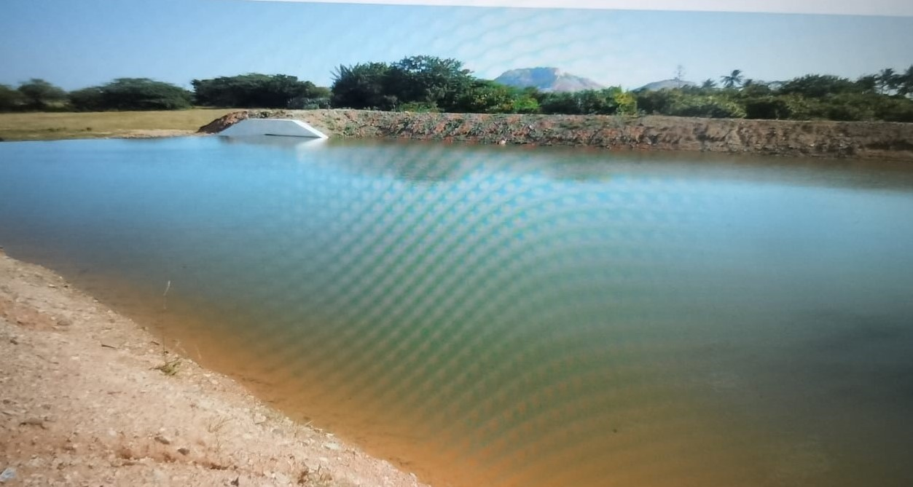
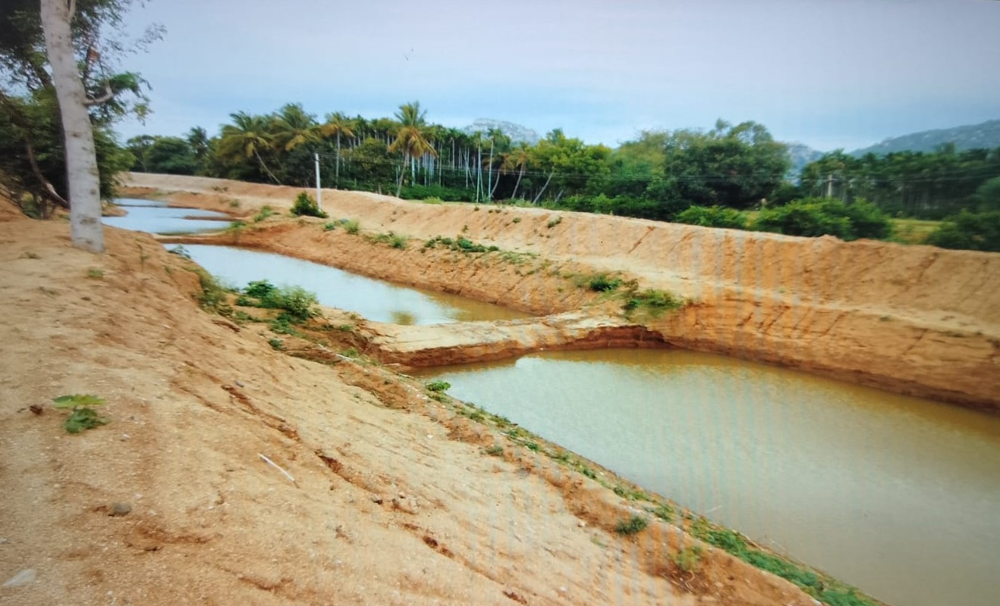

Water Preservative Activities


Construction of water harvesting structures such as percolation tanks, check dams, supply channels to conserve rainwater and recharge groundwater.
Renovations of old tanks to enhance their restoring capacity.
Promoting micro-irrigation systems especially through solar panels for judicious and optimum use of available water resources.
There are total of 367 people living in the Nijavalli village in which all are getting the benefits from the ecology project. The graph and table shows the demographic details of the village
Renovation of the Check Dam
The primary objective behind the implementation of check dams in Nijavalli is to streamline and ease the agricultural activities within the region. Positioned strategically across water channels, these dams act as reservoirs that harness and store rainfall runoff. This stored water serves as a crucial resource for irrigation, mitigating the challenges posed by fluctuating rainfall patterns and ensuring a reliable water supply for agricultural endeavors. During periods of rainfall, the check dams efficiently capture and retain water, creating reservoirs that can be tapped into during drier spells. This water storage mechanism provides a lifeline for farmers, offering a sustainable solution to the uncertainties associated with seasonal rains. In essence, these dams become reservoirs of resilience, fortifying the agricultural landscape against the vulnerabilities imposed by climate variability.
The impact of the check dams extends beyond agriculture, catering to the general needs of the people in Nijavalli village. The stored water serves as a valuable resource for various communal activities, ranging from livestock maintenance to household chores. Villagers, now armed with a reliable water source, experience a transformation in their daily lives, alleviating the burdens associated with water scarcity and creating a more conducive environment for overall well-being.
In Nijavalli, the presence of four strategically located check dams underscores the commitment to optimizing water management for agricultural purposes. These dams, strategically positioned to harness the natural flow of water, effectively create reservoirs that can be utilized judiciously for irrigation. As a result, the agricultural landscape is endowed with a consistent water supply, empowering farmers to cultivate their crops with greater certainty and reducing the risks associated with dependency on unpredictable rainfall.
Micro Irrigation
In the early 2000s, the agricultural landscape underwent a profound shift as traditional methods like open well and rain-fed farming encountered challenges due to the depletion of above-ground resources and unpredictable rainfall patterns. Faced with the increasingly infeasible nature of these practices, farmers found themselves compelled to explore alternative water management techniques that not only required less intensity but also optimized water usage for sustainable agricultural practices.
The depletion of above-ground resources, including open wells and reliance on rain-fed farming, served as a catalyst for change in farming practices. As irregular rains became a prevalent challenge, it became evident that a paradigm shift was necessary to ensure the resilience of agricultural activities. In response to these challenges, farmers embraced a transformative approach by turning to groundwater irrigation, digging bore-wells to access the subterranean water table. The transition from solely depending on rain-fed and open well-based irrigation to groundwater irrigation marked a significant evolution in the agricultural practices of the time. Groundwater, accessed through bore-wells, provided farmers with a more reliable and consistent water source, mitigating the uncertainties associated with erratic rainfall. This shift not only addressed immediate concerns related to water availability but also laid the groundwork for a more sustainable and resilient agricultural future.
Impact:
Sprinkler Method
The sprinkler technique revolutionized agricultural practices by delivering water to plants in the form of a localized 'rain.' Unlike drip systems, sprinklers and micro-sprinklers were elevated higher off the ground, enabling an even water spray over the entire crop. This innovation facilitated the expansion of groundnut cultivation in additional areas without increasing the overall water usage.
The elevated positioning of sprinklers allowed for efficient water distribution, covering a larger expanse of crops compared to traditional methods. This not only optimized water usage but also proved instrumental in bringing additional areas under groundnut cultivation without a proportional increase in water consumption. The versatility of sprinkler systems became particularly evident in their ability to support two crop cycles per year, a remarkable feat compared to many other agricultural crops.
Groundnut farming, a staple in the region, benefited significantly from the adoption of sprinkler systems. The even and controlled water spray provided by sprinklers proved to be especially advantageous for groundnut cultivation. This crop, heavily relied upon by local farmers, saw increased yields and improved growth under the precision irrigation facilitated by sprinkler technology.